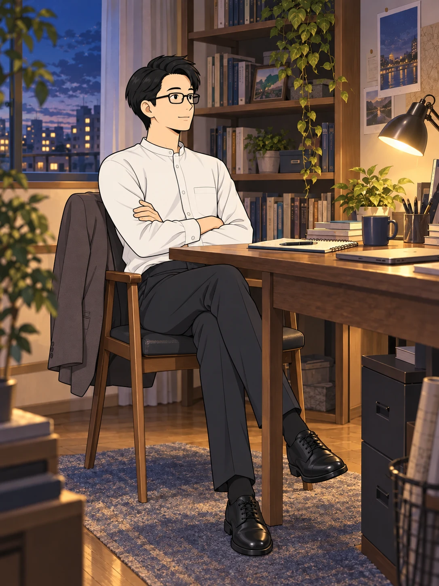
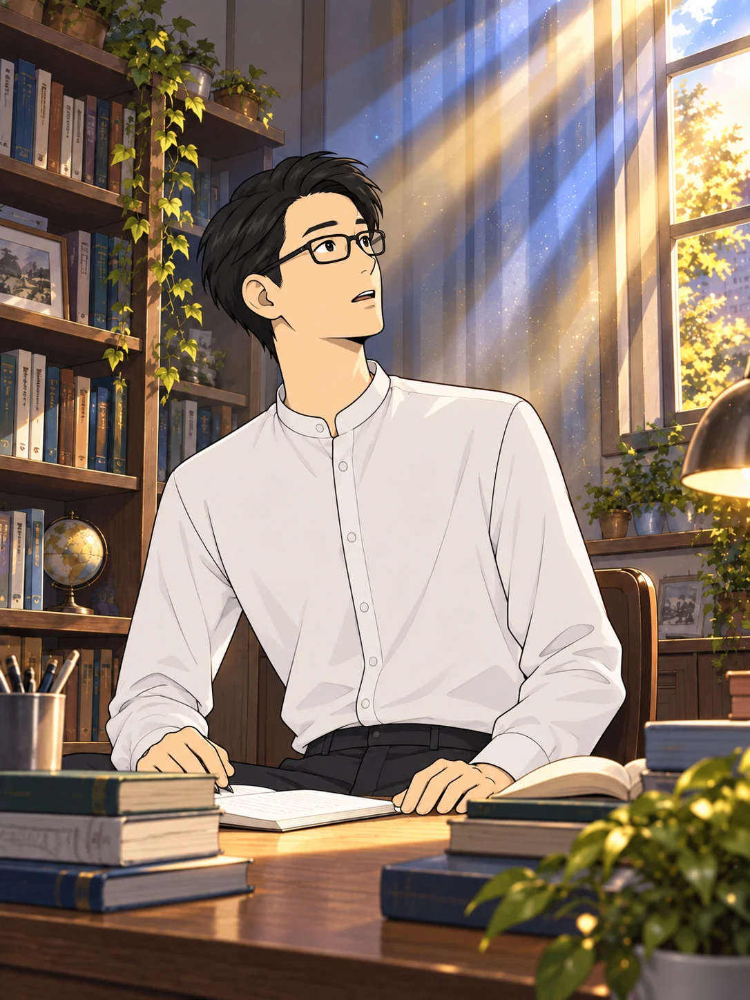
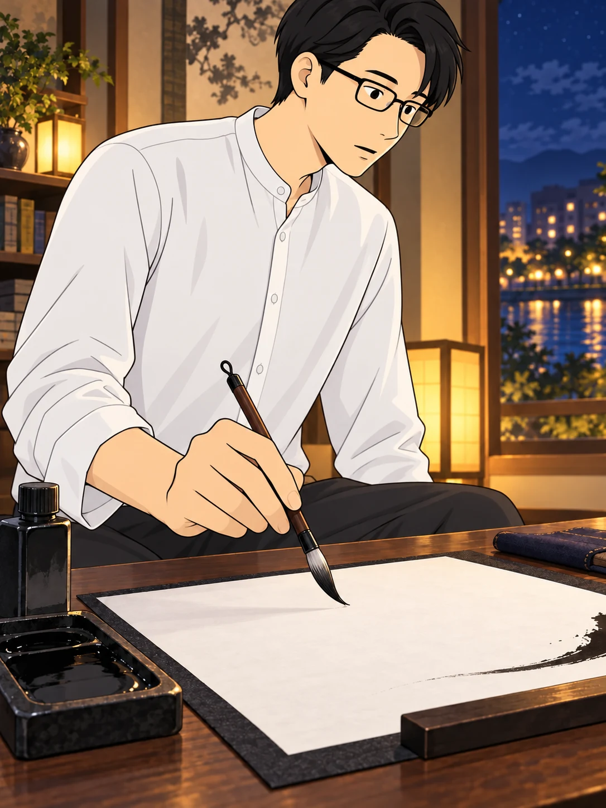
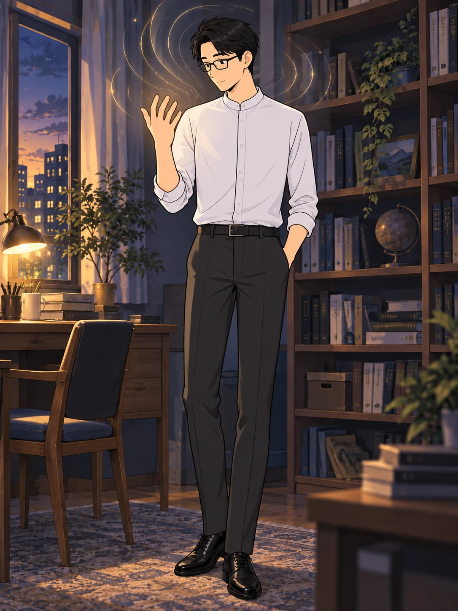
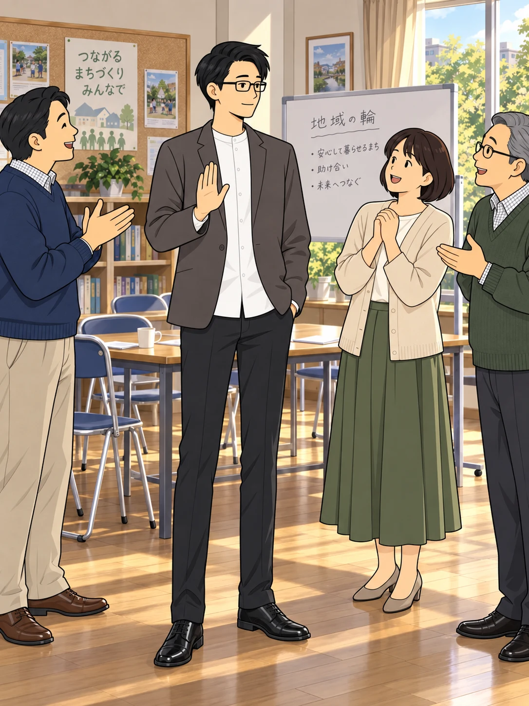
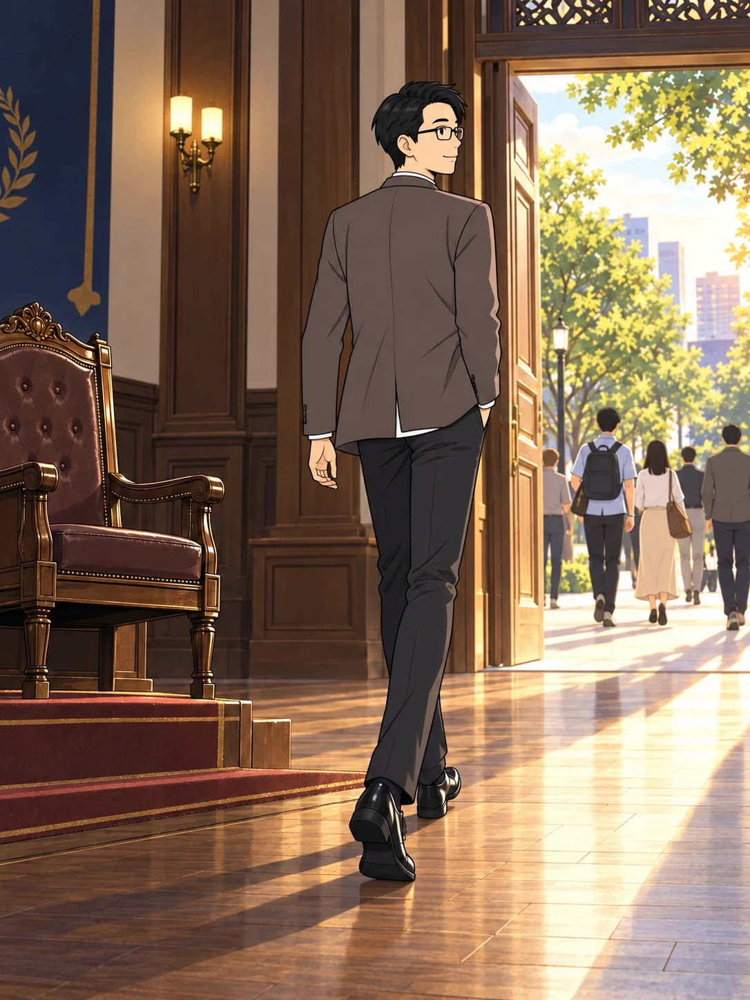

答えを求め、思索を重ねる。
そんな、ある日のことだった。

静かな部屋で、
突然、声が届いたという。

その問題を解決するのは
あなたです。
これから霊修行が始まります。
覚悟するように。
戸惑いの中、街へ出て、
紙と毛筆を用意した。

霊修行……!?
一体、何が起きようと
しているんだ……。
机に向かうと、
自分の意志とは別に、手が動く。

書き記された言葉
無礙自在
むげじざい
紙に刻まれたのは、
何物にも囚われない、自由な心を表す言葉だった。
さらに、自分の手にも、
感覚にも、変化を感じたという。

手相が一変している……!?
霊視や霊聴、未来予知の能力まで
開花し始めた……！
けれど、周囲の称賛に
身を委ねることはなかった。

救世主だ。釈迦の生まれ変わりだ。
ここで有頂天になったら
おしまいだ！
「選ばれた特別なわたくし」——
その選民意識こそ、危険な罠だ。
求めていたものを、
見失ってはならない。

私は教祖になりたいのではない。
誰もが歩める普遍の道でなければ、
意味がない！
特別な座ではなく、
誰もが歩める道を。